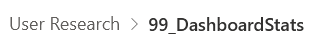
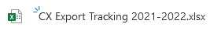

UX Stats
CX Survey - Export - UserTesting.COM SUS & NPS
What it does
- Asks participants to perform the same task on
The Task
- Find any useful info on exporting your goods to Australia. Do not spend more than 3 minutes
- This is deliberately simple and quite straightforward BUT Can be serviced in many different ways.
Measurement
We are measuring 3 things and analysing a third
- SUS (System Usability Score)
- NPS (Net Promoter Score)
- Analysisng the Path structures users take on each site. This will hopefully produce some insight into differences observed in teh first two measures
NPS
Data
NPS Tasks in UserTesting.com Report
Task 3 : Enterprise Ireland
Task 6 : Scottish Enterprise
Task 9 : INI
Task 12 : gov.uk
Task 15 : Great.Gov.Uk
Calculate NPS
This spreadsheet allows you to add scores from the UserTesting report and calculate NPS score from them
- Or use this online tool: https://delighted.com/nps-calculator
The data is stored in the following table
Sharepoint Folders
- Use this folder

- Add data to spreadsheet:

This creates charts such as this:

To view as a Dynamic WebPage it is then placed in this Google Spreadsheet:
- https://docs.google.com/spreadsheets/d/10ilplKLLYGecmUFpmk3JUOjuft7rWL45p8QrU1WeHWQ/edit?usp=sharing
And Can be viewed using this Web Page of graphs
https://scotentsd.github.io/resources/cx.html
SUS
System Usability Score:
- Asks 10 questions
- Has a mix of Positive & Negative questions
- Is good for immediate responses, post test
https://www.alchemer.com/resources/blog/customer-satisfaction-metrics/
SUS on USERTESTING.COM
Read: https://help.usertesting.com/hc/en-us/articles/360053994052-SUSplus-App